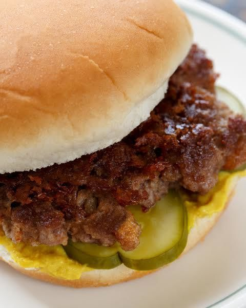

The Slug Burger

Description
The origins of the Slug Burger are murky, but its birthplace seems to
be pinned to Corinth, Mississippi. Those who serve actual Slug Burgers
today refuse to admit it or give up decades-old recipes.
Almost a century
ago, as the popularity of the Slug Burger flourished, short-order cooks
would put their spin on the Slug using potato flour, soy grits, soy flour,
and stale bread.
Ingredients
- neutral oil
- 500g fresh-ground meat
- 1 cup bread crumbs
- salt
- soft white buns
- yellow mustard
- dill picle chips
Steps
- Preheat the cast-iron skillet over medium heat (or the flat top to
medium) and add a drop or two of oil.
- Place the ground beef and bread crumbs in the mixing bowl and, using
your hands, mix until fully blended. Divide the meat mixture into 6 equal
portions (90 g each) and roll them into balls.
- Place the balls of beef on the heated skillet.
- Use the stiff spatula to give each of the balls a good press until it takes
the shape of a patty and sprinkle each with a pinch of
salt. Let cook, without disturbing them, for 3 minutes or until reddish
liquid begins to form on the patty surface.
- While the patties are cooking, prep the buns by slathering the cut-side
of each bottom bun with a swipe of mustard and topping with 2 or 3
pickle chips—the traditional condiments for a classic slug burger.
- Flip the burgers once and let them cook for another 1½ minutes
without touching them. They will appear sizzling and crispy on their
cooked sides when they’re done. Transfer to the prepared buns and
serve.